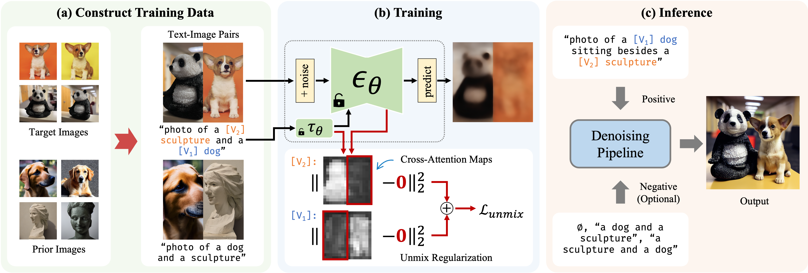

SVDiff: Compact Parameter Space for Diffusion Fine-tuning

Diffusion models have achieved remarkable success in text-to-image generation, enabling the creation of high-quality images from text prompts or other modalities. However, existing methods for customizing these models are limited by handling multiple personalized subjects and the risk of overfitting. Moreover, their large number of parameters is inefficient for model storage. In this paper, we propose a novel approach to address these limitations in existing text-to-image diffusion models for personalization. Our method involves fine-tuning the singular values of the weight matrices, leading to a compact and efficient parameter space that reduces the risk of overfitting and language-drifting. We also propose a Cut-Mix-Unmix data-augmentation technique to enhance the quality of multi-subject image generation and a simple text-based image editing framework. Our proposed SVDiff method has a significantly smaller model size (1.7MB for StableDiffusion) compared to existing methods (vanilla DreamBooth 3.66GB, Custom Diffusion 73MB), making it more practical for real-world applications.
Spectral Shifts Our method's core idea is to apply the concept of spectral shifts from FSGAN to the parameter space of diffusion models. We first perform Singular Value Decomposition (SVD) on the weight matrices of the pre-trained diffusion model. The weight matrix is denoted as W, and its SVD is W=UΣV T. The SVD is a one-time computation and can be cached. This procedure is inspired by viewing convolution kernels as linear associative memories.

Our CoSINE pipeline enables Single-Image Editing with a text-to-image diffusion model. It fine-tunes the model using a single image-prompt pair and allows desired edits at inference by modifying the prompt. DDIM inversion is employed for improvements when no significant structural changes are needed.
Our Cut-Mix-Unmix data-augmentation method enables Multi-Subject Generation. We manually create image-prompt pairs using CutMix-like data augmentation and train the model to separate different concepts by presenting explicit mixed samples. To enforce separation, we apply MSE on non-corresponding regions of cross-attention maps, ensuring each subject's token doesn't attend to another subject. At inference, we modify the prompt to generate a new composition.
Our single image editing results show that our method allows successful image edits, even with slight misalignments. It performs well in tasks such as object removal, pose adjustment, and zooming when compared to full model fine-tuning. While backgrounds may be affected, the main subject remains well-preserved. We utilize DDIM inversion for most edits.

Our single subject generation results demonstrate that our method performs comparably to DreamBooth and effectively preserves subject identities in most cases. The text prompts under input images are used for training, while those under sample images are used for inference.
Multi-subject generation results show that both full weight and our method benefit from Cut-Mix-Unmix data augmentation. Without it, the model struggles to disentangle subjects of similar categories, as demonstrated in some cases. Fine-tuning on two subjects is shown in (a-d) and on three subjects in (e-g).
Combining spectral shifts and weight deltas in one model retains individual subject features, but may mix styles for similar subjects. The results also suggest that task arithmetic property of language models holds in StableDiffusion.
Personalized style transfer and mixing results showcase different approaches: changing coarse class word in (d) and (i), appending "in style of" in (e) and (j), and using combined spectral shifts in (a, b, f, g).
Effects of scaling spectral shifts and weight deltas: Scaling both spectral shift and weight delta changes attribute strength. Too large a scale may cause deviation from the text prompt and visual artifacts.
Effect of limiting rank of spectral shifts: Lower rank leads to limited ability to capture details in edited samples. The model can still reconstruct the subject with rank 1 but may struggle with edited prompts when the rank is low. Performance is better for subjects easier for the model to adapt to, such as Teddybear.
@article{han2023svdiff,
title={SVDiff: Compact Parameter Space for Diffusion Fine-Tuning},
author={Han, Ligong and Li, Yinxiao and Zhang, Han and Milanfar, Peyman and Metaxas, Dimitris and Yang, Feng},
journal={arXiv preprint arXiv:2303.11305},
year={2023}
}
Acknowledgements: We thank Huiwen Chang, Mauricio Delbracio, and Hossein Talebi for their valuable inputs that helped improve this work, and to Nataniel Ruiz and Yuanzhen Li for providing us implementation details of DreamBooth. This work was done by Ligong Han during an internship at Google Research. The website template is borrowed from DreamBooth project website.